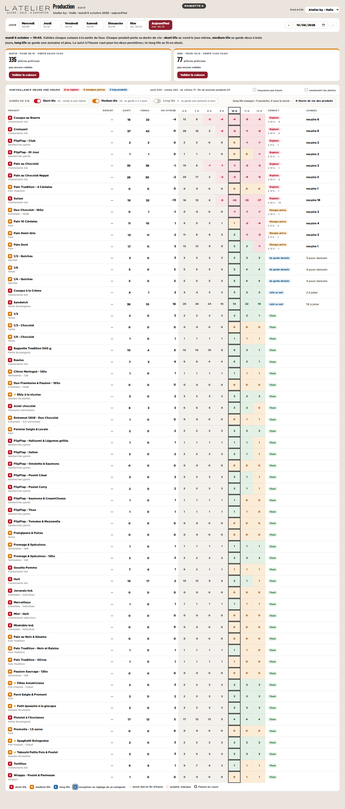
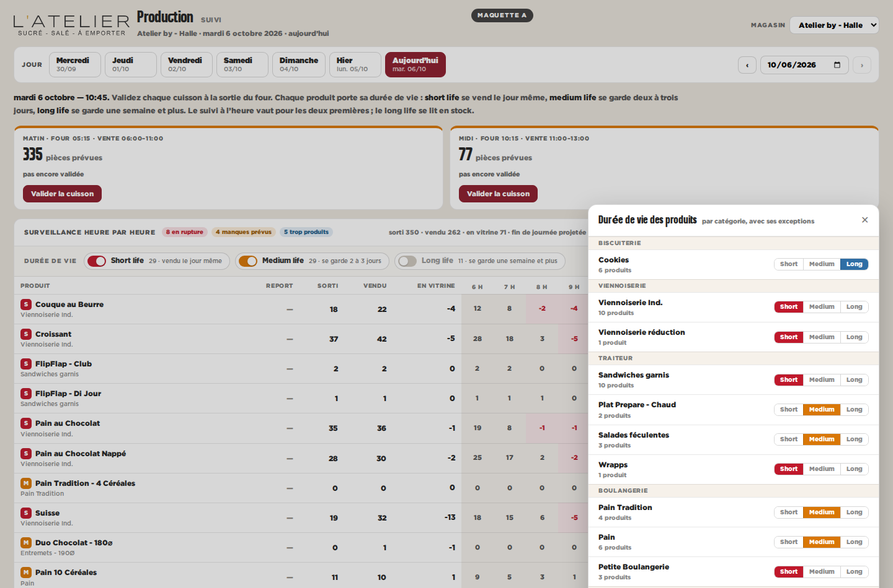
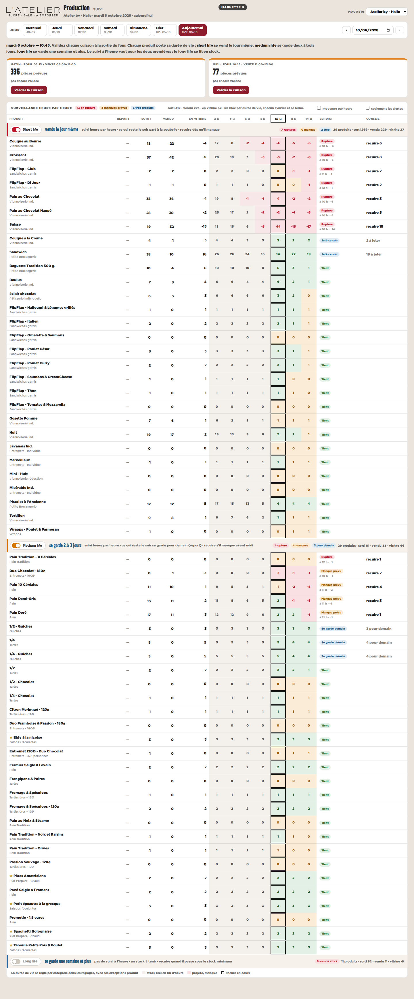
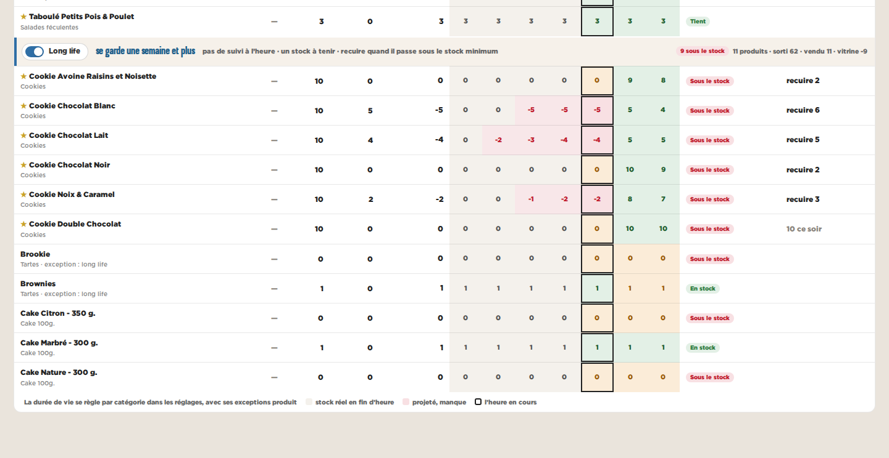
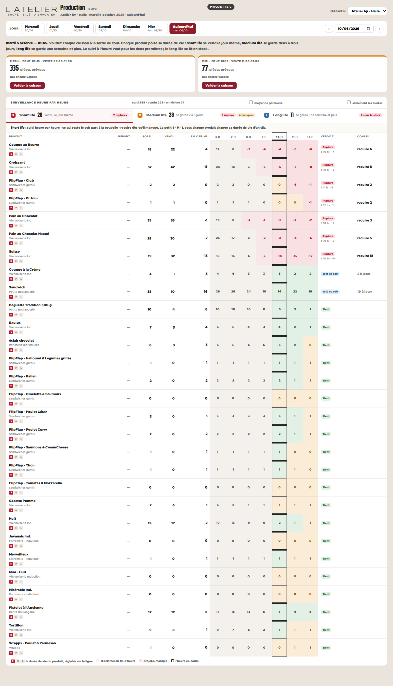
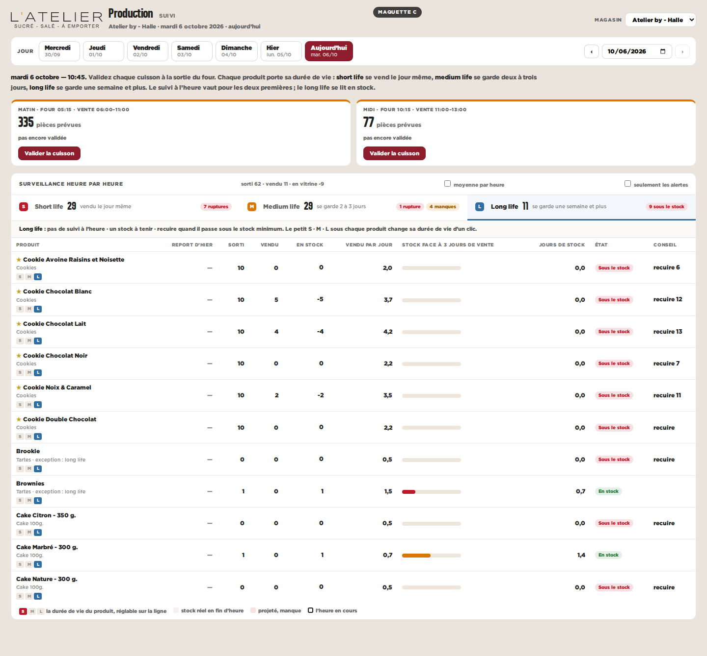

| Short life | Medium life | Long life | |
|---|---|---|---|
| Ce que c’est | vendu le jour même | se garde 2 à 3 jours | se garde une semaine et plus |
| Produits suivis | 29 | 29 | 11 |
| Ce qui reste le soir | part à la poubelle | se garde pour demain | reste en stock |
| Suivi à l’heure | oui | oui | non, un stock à tenir |
Au-dessus du tableau, un interrupteur par durée de vie. Short et medium allumés, long éteint au départ. Une pastille S, M ou L devant chaque produit. Le réglage par catégorie s’ouvre dans un panneau.


Le tableau coupé en trois blocs, short, medium, long, chacun avec son interrupteur, sa règle et ses compteurs. Un bloc fermé garde sa ligne de résumé.


Un onglet par durée de vie, avec ses compteurs. Le long life a son propre tableau : un stock à tenir, en jours de vente, sans les heures. Le S · M · L sous chaque produit change sa durée de vie d’un clic.

